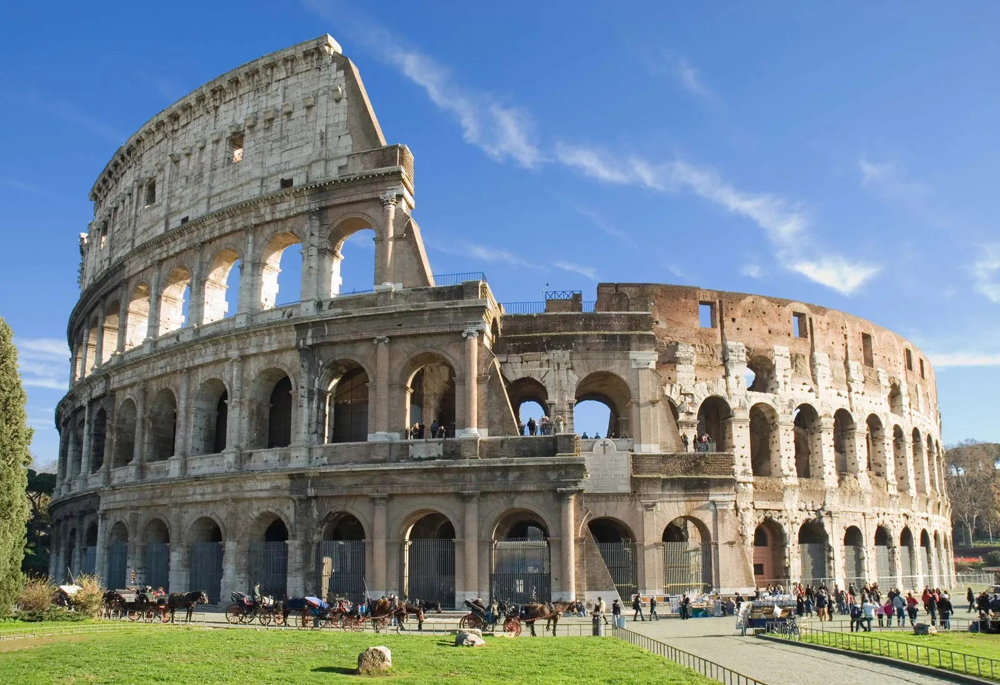
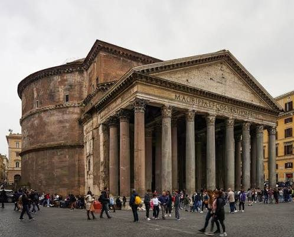
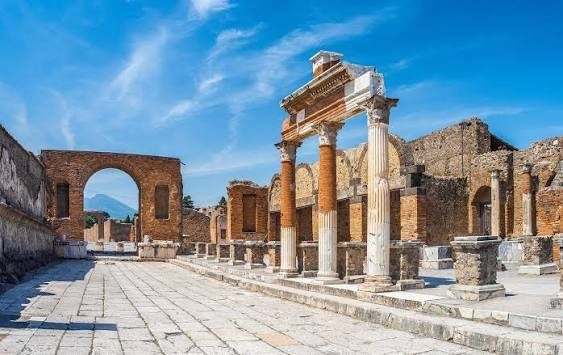

← Back to Europe
Italy
Explore three historic landmarks from Italy.

The Colosseum
Rome
Inaugurated in 80 AD under Emperor Titus, this 50,000-seat amphitheater hosted gladiatorial combats, wild animal hunts, and public spectacles that bound Roman citizens to imperial power. Its trapdoors and vaulted arches still shape stadium engineering.

The Pantheon
Rome
Rebuilt by Emperor Hadrian around 125 AD as a temple to all Roman gods, this architectural marvel features the world’s largest unreinforced concrete dome, pierced by a central oculus. Converted into a Christian church in 609 AD, its continuous use preserved its ancient interior.

Pompeii Archaeological Park
Campania
When Mount Vesuvius erupted in 79 AD, volcanic ash buried this Roman port city overnight, halting everyday life in mid-motion. Excavated bakeries, frescoed villas, and plaster casts offer an intimate look at ordinary Romans two thousand years ago.